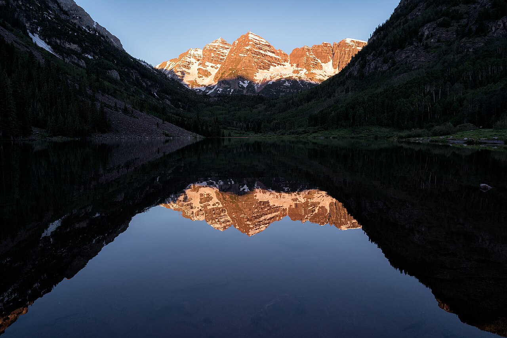
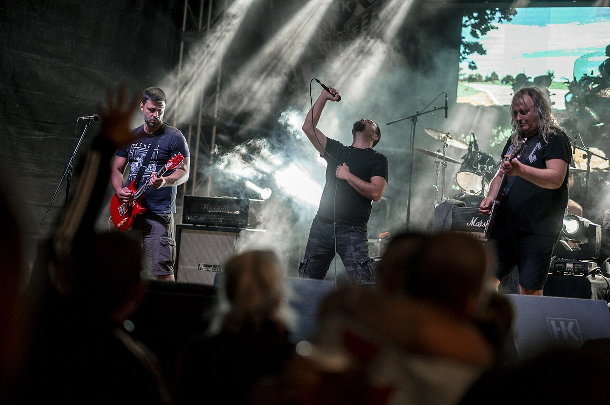
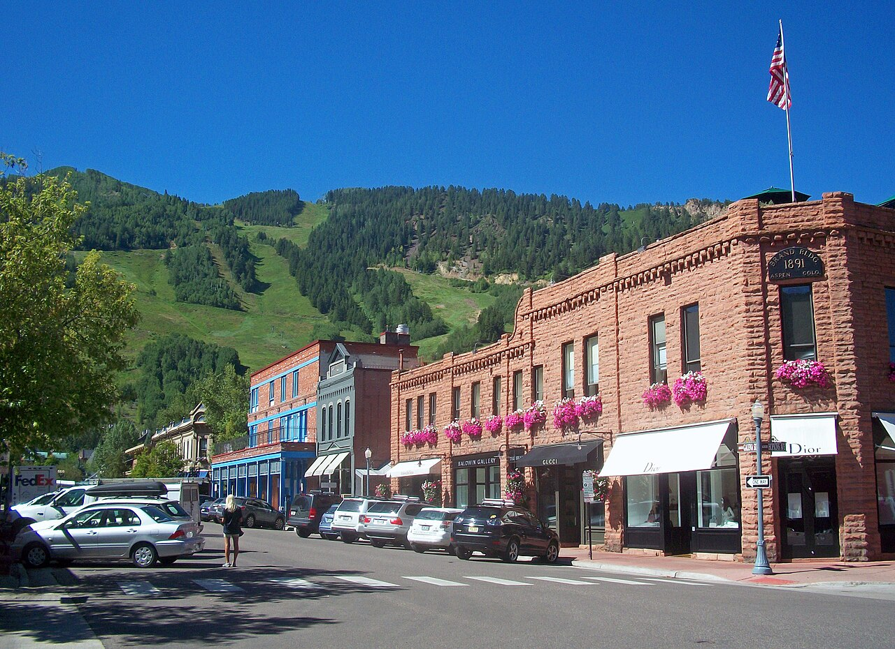
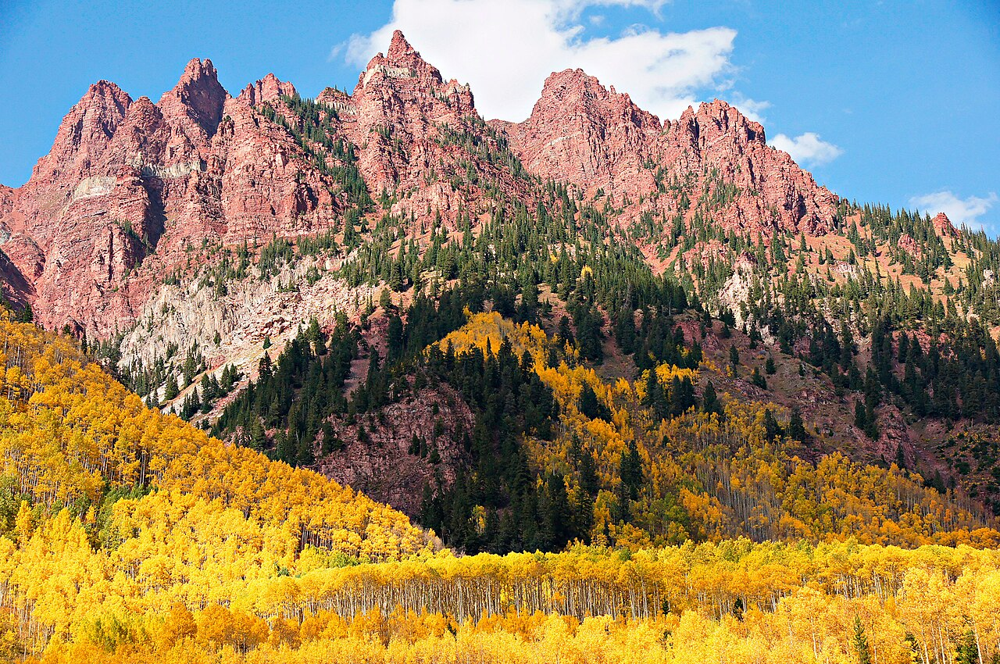
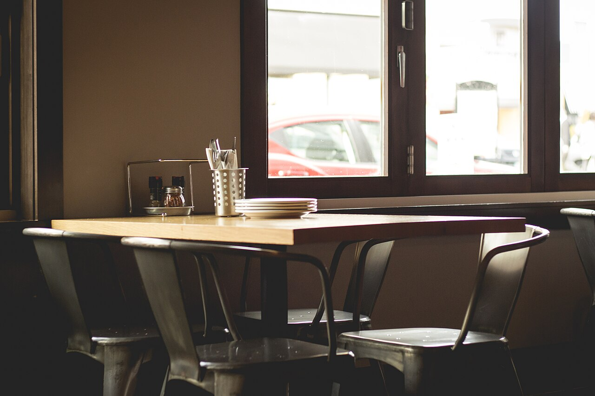
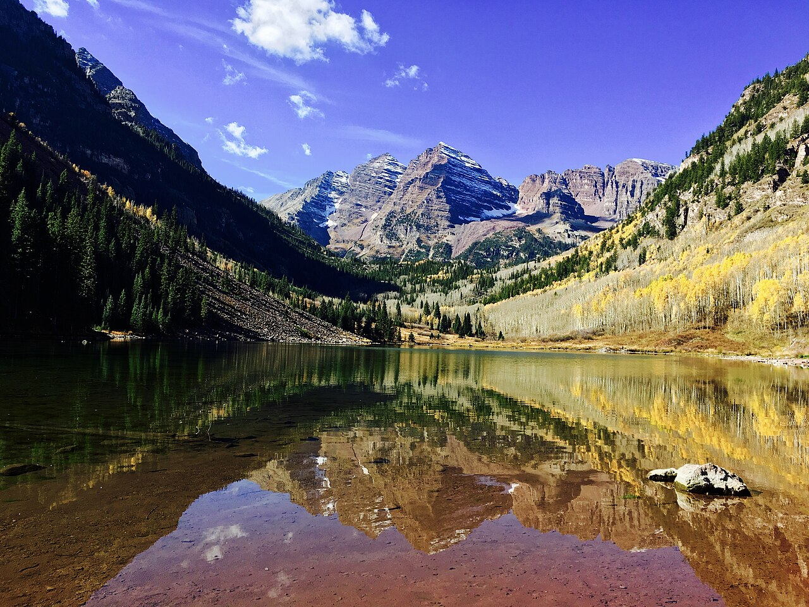

Sat Nov 14 — Fri Nov 20
The Black Angels with GHOSTWOMAN
Austin's psych-rock torchbearers bring their drone-heavy, Velvet Underground-descended sound to Belly Up, with GHOSTWOMAN opening.
See what's onFROM ASPEN AND BEYOND
A weekly field guide to what's on — music, art, and high-country happenings, verified before publication.

The CoverGhost tours through downtown’s haunted history, a walk with the dead at Ute Cemetery, and a town full of costume parties on Saturday night — every pick verified against official sources before publication.
Cover: Maroon Bells at sunrise — Lorie Shaull, CC BY-SA 2.0. Display crop and seasonal color treatment.
Sat Nov 14 — Fri Nov 20
Austin's psych-rock torchbearers bring their drone-heavy, Velvet Underground-descended sound to Belly Up, with GHOSTWOMAN opening.
See what's on
BrowseEvery verified event, soonest first — music, art, and nights out.

WanderEvery event, placed across Colorado.

PlanThe month at a glance.

The ConciergeLocal staples, scored and verified.

DoGuides to playing here — the high country, on foot, on water, and soon, on snow.
Coming up — November
Country veteran Suzy Bogguss swings through holiday classics with western-swing charm at the Wheeler.
Victor Wooten — five-time Grammy winner and arguably the most influential living bassist — with his brothers.
Every verified listing for November, in one place. Open it →
Every event is checked against the venue's own page or a trusted local source before it reaches you.
A listing scraped from somewhere else isn't proof. Alone, it never gets published.
If two sources give different times, the pick waits until one is authoritative.